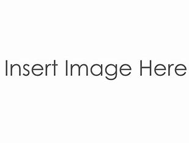
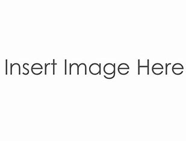

Turtles turtles from emoji kitchen just turtles on this page


Welcome to the turtle ticket website!
this page will show you the products that we have

 

History
the turtle ticket is a from the website emoji kitchen to make the turtle ticket you need the turtle and ticket of course the golden turtle ticket you need the filmtape and the turtle the turtle express is owned by The PUMS PUMS stands for Pneumono ultra microscopic or pneumonoultramicroscopic which is 80% of the longest word in the english why? i dont know but they choose it this is how the process works first you need one eraser for one turtle ticket and you need exchange your turtle ticket for any image you want but it has to follow the guidelines which is on next page for a golden turtle ticket you need a big eraser or 5 small erasers 2023 the PUMS dont have a name yet it was known as a turtle business Early 2024 the turtle business someone gave the business a toy turtle and the turtle toy business started but it ended in mid 2024 in late 2024 and mid and early there was geography class they made and it ended in 2025